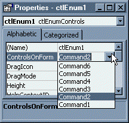

EX Property Browsing in VB (19K)
EX Property Browsing in VB (19K)
 23 Nov 1998
23 Nov 1998
First Posted

Using IPerPropertyBrowse to Customise the Design Time Properties for a Control
Create drop-down lists for anything in the Property Browser
The Properties Window in VB for a UserControl is fairly flexible under VB: you automatically get drop-down lists for enumerations, and Fonts and Color properties are hooked up nicely as well. However, if you want to provide a more customised list for a property then VB doesn't allow you to do it. This article demonstrates how to implement the IPerPropertyBrowse interface to get more control.
About the Download
The download includes:
- A type library (OLETypes.tlb) exposing the IDispatch and IPerPropertyBrowsing interfaces to VB, with full ODL source code.
- Source for a Visual Basic DLL (EXPerProp.DLL) which wraps up the seriously tricky bits of getting VB to respond to the interface.
- Two sample projects demonstrating the features of the DLL:
- Example 1 demonstrates how to override the display text for enumeration with
your own custom (and possibly more friendly names). For example, your control might display
and enum like this:
1 - epfgxAlignLeft 2 - epfgxAlignCentre 3 - epfgxAlignRight
You can replace this with something more meaningful:Left Centre Right
- Example 2 demonstrates how to provide a pick list of objects on the control's owner form. For example, you may have a control which can be bound to an ImageList. You could use this code to enumerate all candidate ImageLists on the form and display a drop-down list.
- Example 1 demonstrates how to override the display text for enumeration with
your own custom (and possibly more friendly names). For example, your control might display
and enum like this: